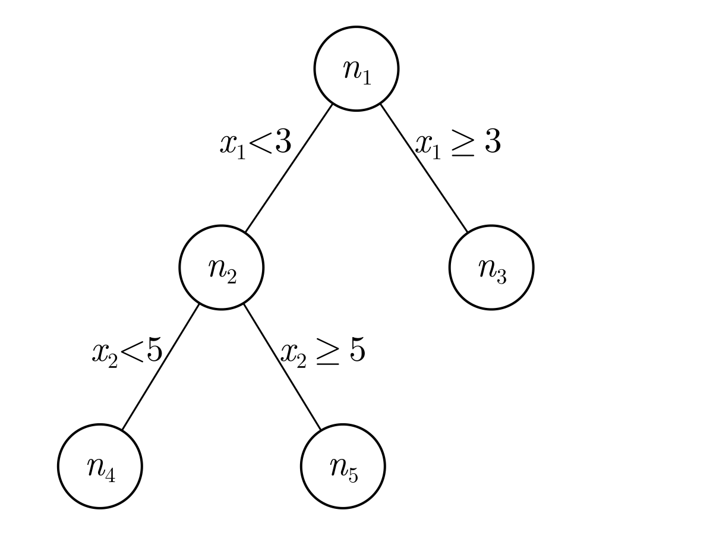

Implementation Overview
This page provides a high-level overview of the implementation. In essence, this overview is a combination of three things:
- Section 8.1.1 Regression Trees and 8.1.2 Classification trees (James et al., 2021).
- The SIRUS algorithm description (Bénard et al., 2021).
- Some implementation details, as obtained by trial and error and by correspondence with Clément Bénard, which were missing from aforementioned sources.
Fit Stabilized Trees
The tree fitting procedure is very similar to the algorithm explanation in James et al. (2021). In summary:
First, fit a large number of trees where for each tree a subset is taken from the observations and the features. These subsets make the trees less correlated and it has been empirically shown that this improves predictive performance. Specifically, the subsets are as follows:
- For the subset of observations, take
partial_sampling(default: 0.7) *nrandom observations from the original dataset. Sample these observations with replacement. - For the subset of features, take
sqrt(p)random features from the original dataset, wherepis the number of features. Samples these features without replacement. Note that the subset of features is chosen at each split of the tree and not only once for each tree. If you choose the subset only at the start of the tree building, then an important feature might not end up in the tree at all, which results in poor predictive performance. So, choosing this at each split is the best of both worlds since it (1) avoids that each tree splits the root node on the same feature and (2) does still allow the important features to all be used inside the tree.
Before continuing with the algorithm description, we need a small digression on the splitpoints that the algorithm uses. What is different in the SIRUS algorithm compared to vanilla random forest implementations, is that the SIRUS algorithm calculates the splitpoints before splitting. These splitpoints are calculated over the whole dataset and then the location of the splits are restricted to these pre-determined splitpoints. In other words, the location of the splits is only allowed to be on one of the pre-determined splitpoints. Regarding the splitpoints calculation, the splitpoints are calculated by taking q-empirical quantiles. Simply put, taking q-empirical quantiles means determining q quantiles (splitpoints) which divide the dataset in nearly equal sizes. The empirical part denotes that we determine the quantiles for data instead of a probability distribution.
On this subset, then fit a tree. For both trees, we apply the top-down, greedy approach of recursive binary splitting, where each split aims to find the best split point. Finding the best splitpoint means looping through each possible splitpoint from the aforementioned set of pre-determined splitpoints and for each splitpoint determine two half-planes (or regions). In the left half-plane, take all the points in the feature under consideration which are lower than the splitpoint, that is, $R_1 = \{ X \: | \: X_j < s \: \}$. In the right half-plane, take all the points in the feature under consideration which are higher or equal than the splitpoint, that is, $R_2 = \{ X \: | \: X_j \geq s \: \}$. Then for each of this combination of two half-planes, find the best splitpoint. Finding the best splitpoint boils down to find the split which "summarizes" the data in the best way. For regression, the best split point is found by finding the splitpoint for which we lose the least information when taking the average of $R_1$ and $R_2$. More formally, the split is found by minimizing the Residual Sum of Squares (RSS):
\[\sum_{x_i \in R_1} (y_i - \hat{y}_{R_1})^2 + \sum_{x_i \in R_2} (y_i - \hat{y}_{R_2})^2,\]
where $\hat{y}_{R_1}$ and $\hat{y}_{R_2}$ denote the mean response for the training observations in respectively $R_1$ and $R_2$. For classification, the best split point is found by determining the classes beforehand and then using these to calculate the Gini index. The Gini index is needed because classification deals with an unordered set of classes. The Gini index is a way to determine the most informative splitpoint via node purity and defined as:
\[1 - \sum_{\text{class} \in \text{classes}} p_{\text{class}}^2,\]
where $p_\text{classes}$ denotes the fraction (proportion) of items from the current region that are from class. Note that this equation is optimized for computational efficiency. For the full derivation from the original equation, see Gini impurity at Wikipedia.
Rule Generation
After creating many trees, the SIRUS algorithm converts these trees to rules. One of the first of such rule-based models was the RuleFit algorithm (Friedman & Popescu, 2008). The idea behind these models is that any tree can be expressed as a set of rules. For example, say we have the following tree with nodes $n_1, n_2, ..., n_5$.
and say that this tree was generated from a tree fitting procedure as described above. From this representation, we can see that node $n_1$ splits the feature $x_1$ on 3. If $x_1 < 3$, then the prediction will go to $n_2$ and if $x \geq 3$, then the prediction will take the content of $n_3$. In $n_2$, the prediction will be made based on $n_4$ or $n_5$ depending on whether feature $x_2$ is smaller than or greater or equal to 5.
To convert such a tree to rules, note that each path to a leaf can be converted to one rule. For example, the path to $n_3$ can be converted to
\[\text{if } x_1 \geq 3, \text{ then } A \text{ else } B,\]
where $A$ considers all points that satisfy the rule constraints represented by the path to $n_3$ ($x_1 \geq 3$) and $B$ considers all points that do not satisfy the rule constraints ($x_1 < 3$). Similarly, the path to $n_4$ can be converted to
\[\text{if } x_1 < 3 \: \& \: x_2 < 5, \text{ then } C \text{ else } D,\]
where $C$ considers all the points that satisfy the rule constraints and $D$ considers all the points that do not satisfy the rule constraints.
Unlike regular decision trees, rule-based models are typically restricted to a depth of 2 for reasons that will be explained later. For now, say we have a large number of trees, typically around 1500, with a depth of at most 2, then we can estimate that the number of generated rules will be at most 6 * 1500 = 9000. I'm taking 6 here since a tree of depth 2 can have at most 7 nodes, of which all but the root are converted to a separate rule. In other words, "both internal and external nodes are extracted from the trees of the random forest to generate a large collection of rules, typically $10^4$" (Bénard et al., 2021, Section Rule generation).
Obviously, thousands of rules are not interpretable. Just like random forests, each prediction can be traced back to exactly how it was made. However, thousands of additions and multiplications are hard to interpret and explain. That's why visualizations based on SHAP are often used (e.g., Molnar, 2023). Still, these visualizations simplify the model such that feature importances becomes explainable, but they do not fully explain how predictions are made. The SIRUS algorithm solves that by simplifying the model itself instead of only simplifying the model explanation.
Rule Selection and Post-Treatment
The aim of rule selection is to remove as many rules as possible without affecting the predictive performance too much. This is similar to the Tree Pruning that happens in Random Forests (James et al., 2021; Section 8.1). This is also similar to pruning in artificial neural networks, where the least important neurons are removed. In the SIRUS algorithm, this pruning is done via two ways. Firstly, by pruning the many identical rules in the different forests, which are identical thanks to tree stabilization done when building the trees. The tree stabilization makes the rules identical because the splitpoints are identical in the different trees. For example, the stabilization could result in the rules $\text{if } x_1 < 3 \text{ then, } ... \text{ else } ...$ and $\text{if } x_1 < 3 \text{ then, } ... \text{ else } ...$ both existing in different trees. Secondly, by pruning rules which are a linear combination of other rules.
The first step requires setting a hyperparameter $p_0$ in the original algorithm. The hyperparameter specifies a threshold which is then used to remove rules with an occurrence frequency below $p_0$. This Julia implementation ignores this step because the Julia implementation of the second step (see the next paragraph) is more efficient, and thus we can omit the rule removal in the first step.
The second step is to remove the least important linear combinations of other rules. An example of this is shown in the original paper (Bénard et al., 2021, Table 3 (the second) in Section 4 Post-treatment Illustration of the Supplementary PDF), which is repeated here:
| Rule Number | If Clause | Then | Else | Remove | Reason |
|---|---|---|---|---|---|
| 1 | $x_1 < 32000$ | 61 | 408 | ||
| 2 | $x_1 \geq 32000$ | 408 | 61 | yes | rule 1 |
| 3 | $x_2 < 8000$ | 62 | 386 | ||
| 4 | $x_2 \geq 8000$ | 386 | 62 | yes | rule 3 |
| 5 | $x_3 < 64$ | 56 | 334 | ||
| 6 | $x_3 \geq 64$ | 334 | 56 | yes | rule 5 |
| 7 | $x_1 \geq 32000 \: \& \: x_3 \geq 64$ | 517 | 67 | ||
| 8 | $x_4 < 8$ | 50 | 312 | ||
| 9 | $x_4 \geq 8$ | 312 | 50 | yes | rule 8 |
| 10 | $x_5 < 50$ | 335 | 58 | ||
| 11 | $x_5 \geq 50$ | 58 | 335 | yes | rule 10 |
| 12 | $x_1 \geq 32000 \: \& \: x_3 < 64$ | 192 | 102 | yes | rule 1, 5, 7 |
| 13 | $x_1 < 32000 \: \& \: x_4 \geq 8$ | 157 | 100 | ||
| 14 | $x_1 \geq 32000 \: \& \: x_4 < 12$ | 554 | 73 | ||
| 15 | $x_1 \geq 32000 \: \& \: x_4 < 12$ | 252 | 96 | yes | rule 1 and 14 |
| 16 | $x_2 \geq 8000 \: \& \: x_4 \geq 12$ | 586 | 76 | ||
| 17 | $x_2 \geq 8000 \: \& \: x_4 < 12$ | 236 | 94 | yes | rule 3 and 16 |
Compared to the example from the Supplementary PDF, the features are renamed such that 2 = MMAX, 2 = MMIN, 3 = CACH, 4 = CHMIN, and 5 = MYCT and one sign was flipped in rule 14 after email correspondence with Clément. From this set of rules, the algorithm should remove rule 2, 4, 6, 9, 11, 12, 15, and 17. This is because rule 2, 4, 6, 9, and 11 are the reverse of an earlier rule and because 12, 15, and 17 are linearly dependent. For the complex linearly dependent duplicates, remove the rule with the widest gap in the outputs. In the example above, rule 7 has a wider gap than rule 12, which implies that it has a larger CART-splitting criterion and a higher occurrence frequency.
The implementation for this can be done by converting the training data to a feature space in which each rule becomes a binary feature indicating whether the data point satisfies the constraint or not. This is quite computationally intensive since there is a lot of duplication in the data and it doesn't guarantee that all cases of duplication will be found since some may not be in the training set. Luckily, D.W. on StackExchange (https://cs.stackexchange.com/questions/152803) has provided a solution, which I will repeat here. The idea is to remove each rule $r$ when it is linearly dependent on the preceding rules.
To do this, observe that a rule of the form $A$ can only depend on rules $A$ or $!A$, and $A \: \& \: B$ can only depend on rules that use some combination of $A$, $!A$, $B$, and/or $!B$. This works by iteratively calculating the rank and seeing whether the rank increases.
We can assume that we are limited to a set of rules where either A & B, A & !B, !A & B, !A & !B, A, !A, B, !B or True. This last case is not a valid rule in this algorithm, so that will not happen. Now, given A and B, we can create a binary matrix with a row for A & B, A & !B, !A & B, !A & !B. Next, generate one column containing trues and one column for each rule in rules. In each column, answer whether the rule holds for some point that satisfies the conditional. Next, calculate the rank and see whether the rank increases when adding additional rules. If the rank increases, then the added rule was not linearly dependent and if the rank does not increase, then the added rule is linearly dependent with earlier added rules.
Finally, the weights are determined by converting the training data to a rule space. According to Clément Bénard, the best way is to fit a regression model on a dataset where each rule is a binary feature. Furthermore, the weights can be stabilized by using an L2-penalty (ridge); this helps because the rules are quite strongly correlated. He also advised against the L1-penalty (lasso) as it would introduce additional sparsity and then instability of the rule selection since lasso is unstable with correlated features. Finally, the weights are constrained to all be positive since this eases interpretability.